Released: January 11, 2012
Next Release: January 19, 2012
U.S. Motor Gasoline Consumption Patterns in the Near Term
After falling steeply from its 2007 peak, U.S. motor gasoline consumption will likely continue to decline in 2012 and 2013, albeit at slower pace, according to the U.S. Energy Information Administration's (EIA) newly released Short-Term Energy Outlook (STEO). There may be more downside than upside uncertainty in the forecast, however, as the strong rate of recovery expected for new car sales in 2012 and their higher fuel efficiencies could lead to greater-than-expected improvements in average fleet fuel efficiency.
U.S. motor gasoline consumption fell sharply between 2007 and 2011. In 2008, consumption fell by 300 thousand barrels per day (bbl/d) from the previous year, as high retail gasoline prices that persisted through October 2008 and the recession reduced highway travel. Consumption flattened in 2009 and 2010, but then dropped by 240 thousand bbl/d in 2011 as high gasoline prices contributed to the dampening of travel for most of the year. The latest STEO projects that gasoline consumption will fall by 20 thousand bbl/d (0.2 percent) annually in 2012 and 2013 (Figure 1), as modest growth in highway travel is more than offset by continuing improvements in the average vehicle fleet fuel economy.
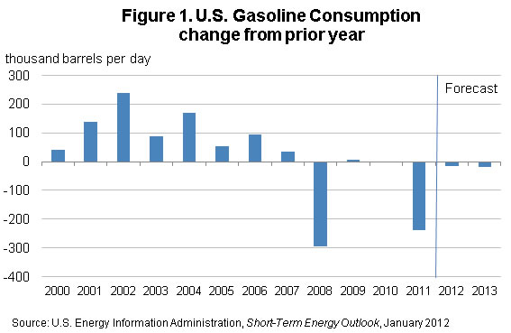
Population and economic growth, the rate of unemployment, and fuel prices influence vehicle miles traveled. Fleet efficiency, which changes slowly based on the efficiency of new vehicles relative to that of the existing fleet and the rate of fleet turnover, links miles traveled to fuel use. STEO, which has been extended through 2013, projects highway travel will grow at an annual average rate of 0.6 percent, and vehicle fuel economy to continue to increase at a 0.9-percent rate over the next two years. While the 27-percent increase in gasoline retail prices in 2011 had a significant impact on consumption (see This Week in Petroleum , August 31, 2011), prices in 2012 and 2013 are not expected to change appreciably from last year's average. Retail regular motor gasoline prices are projected to fall by 1 percent in 2012 and then rise by 2 percent in the following year.
The driving-age population is experiencing a major shift. The total population between the ages of 15 and 64 is projected to grow at an average rate of only 0.7 percent over the next two years, compared with an average 1.3-percent annual growth rate during the period of 1991-2000. In contrast, the total population of drivers 65 years old and over, who drive substantially less than those between 15 and 64 years of age, is projected to increase at an average rate of 3.5 percent, up significantly from the annual average growth rate of 1.2 percent during the period of 1991-2000. Assuming that unemployment rates and retail prices remain close to current levels, EIA expects highway travel growth to be almost a third of GDP growth annually in 2012 and 2013.
As Corporate Average Fuel Economy Standards increase, motor gasoline-related vehicle fuel economy is expected to continue to improve. The U.S. Department of Transportation's Summary of Fuel Economy Performance reports estimated increases in the average vehicle fuel economy of cars and light trucks in use at 0.5 percent per year and 0.6 percent per year, respectively, between 1999 and 2009. Advances in vehicle fuel economy have been especially pronounced in the last few years. Between 2000 and 2005, new car and light truck average fuel economy increased by 6.3 percent and 3.8 percent, respectively. Between 2005 and 2010, average new car fuel economy improved by 11.9 percent while that for light trucks increased by 14.0 percent. EIA expects average fleet fuel economy of vehicles in use to improve by an average of 0.9 percent annually in 2012 and 2013.
Higher-than-projected economic growth would likely raise highway travel and, consequently, motor gasoline consumption. However, an accelerated economic recovery may also boost new vehicle sales, accelerating the replacement of older, less fuel-efficient vehicles and improving the aggregate fuel efficiency. The accelerated replacement of cars at least 10 years old (model year 2002 or older), with an estimated average fuel economy of about 29.0 miles per gallon or less, with new cars with an estimated average fuel economy of about 34 miles per gallon, would at least partially offset the positive effects of increased highway travel on motor gasoline consumption.
Gasoline prices move higher for a third week in a row
The U.S. average retail price of regular gasoline rose just over eight cents last week to reach $3.38 per gallon. The average price is about $0.29 per gallon higher than last year at this time. The Gulf Coast saw the largest increase at just over ten cents per gallon to put prices at $3.20 per gallon. The East Coast followed with an increase of just over nine cents per gallon to reach $3.41 per gallon. The Midwest saw an increase of almost nine cents per gallon, while the West Coast saw the smallest increase of six cents per gallon, but prices there remain the highest in the Nation at $3.61 per gallon. Going against the trend, the Rocky Mountain average price decreased about two cents per gallon to $3.01 per gallon.
The national average diesel price rose for the first time in seven weeks, increasing almost a nickel to $3.83 per gallon. The diesel price is $0.50 per gallon higher than last year at this time. Prices on the East Coast saw the largest regional increase at just over six cents per gallon to put prices at $3.91 per gallon. The Rocky Mountains saw the smallest increase (less than a penny per gallon) to reach $3.84 per gallon. The Midwest, Gulf Coast, and West Coast regional prices each increased about three, four, and five cents per gallon respectively. Prices on the West Coast remain the highest in the Nation at $4.03 per gallon.
U.S. average heating oil price increases
The residential heating oil price increased during the week ending January 9, 2012. The average residential heating oil price rose by $0.09 per gallon last week to reach $3.93 per gallon. This is the largest single week gain in residential heating oil prices since the beginning of the current data collection season, which started October 3, 2011. This price is also $0.57 per gallon higher than the same time last year. The wholesale heating oil price increased by $0.16 per gallon last week to $3.16 per gallon, $0.55 per gallon higher than last year at this time.
The average residential propane price increased by less than $0.01 per gallon, rising to $2.87 per gallon, which is $0.11 per gallon higher than last year. The average wholesale propane price decreased by $0.08 per gallon to $1.26 per gallon. This was a decrease of $0.16 per gallon when compared with the January 10, 2011 price of $1.42 per gallon.
Propane stocks decrease for the tenth consecutive week
Inventories of propane in the United States continued their seasonal trend downward last week, dipping 0.9 million barrels total to end at 54.3 million barrels. The largest draw of 0.4 million barrels occurred in the East Coast region, followed closely by a dip of 0.3 million barrels in the Gulf Coast region. Stocks in the Midwest and Rocky Mountain/West Coast regions both dropped by 0.1 million barrels. Propylene non-fuel use inventories represented 10.4 percent of total propane inventories.
Text from the previous editions of This Week In Petroleum is accessible through a link at the top right-hand corner of this page.
| 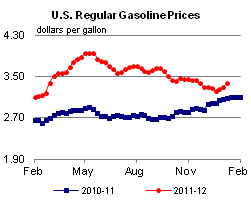 | 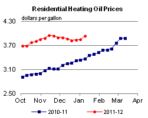 | ||||||
| 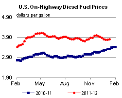 | 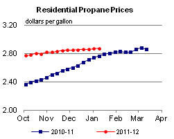 | ||||||
| Retail Data | Changes From | Retail Data | Changes From | ||||
| 01/09/12 | Week | Year | 01/09/12 | Week | Year | ||
| Gasoline | 3.382 | Heating Oil | 3.934 | ||||
| Diesel Fuel | 3.828 | Propane | 2.870 | ||||
| 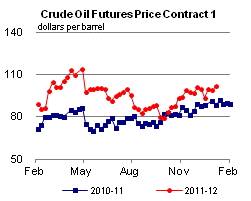 | 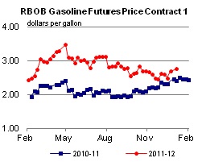 | ||||||||||||||||||||||||||
|
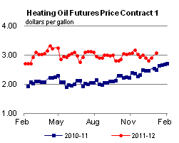 | ||||||||||||||||||||||||||
| *Note: Crude Oil Price in Dollars per Barrel. | |||||||||||||||||||||||||||
| 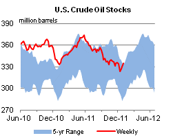 | 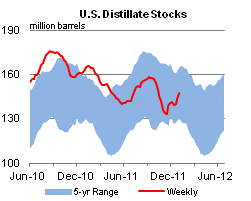 | ||||||
| 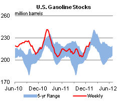 | 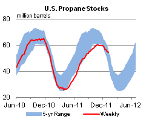 | ||||||
| Stocks Data | Changes From | Stocks Data | Changes From | ||||
| 01/06/12 | Week | Year | 01/06/12 | Week | Year | ||
| Crude Oil | 334.6 | Distillate | 147.6 | ||||
| Gasoline | 223.8 | Propane | 54.285 | ||||